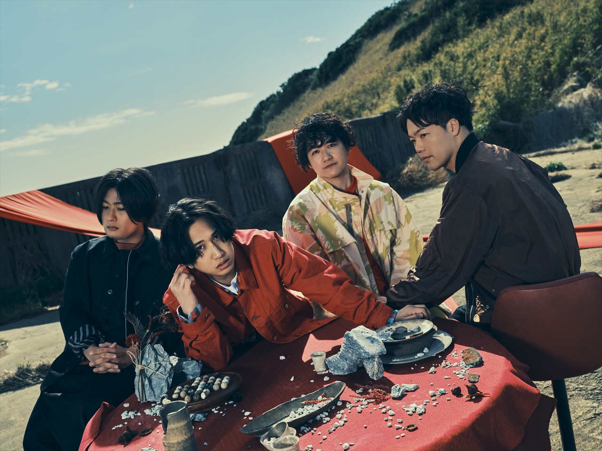
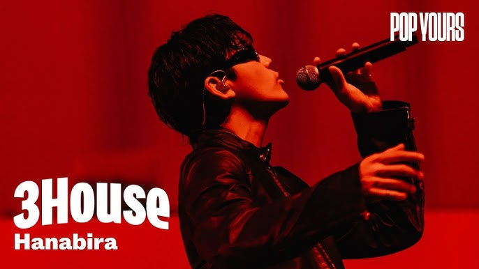

home
food
cinema
sports
music
tension
Mrs. GREEN APPLE
大森元貴 (Vo/Gt)、若井滉斗 (Gt)、藤澤涼架 (Key)による3人組バンド。2013年結成。ハイトーンボイスが魅力的で一度聞いたら耳に離れない癖になるサウンドや幅広い世代に受け入れられる歌詞が特徴。
マカロニえんぴつ

2012年はっとり（Vo/Gt）を中心に神奈川県で結成。メンバー全員音大出身の次世代ロックバンド。はっとりのエモーショナルな歌声と、キーボードの多彩な音色を組み合わせた壮大なバンドサウンドを武器に圧倒的なステージングを繰り広げる。全国にマカロックを響かせるべく都内を中心に活動中！一番好きなアーティストです！！
3House

沖縄出身のラッパー/シンガーで、透明感のある歌声とメロウなフロウが特徴。R&BとHIPHOPを行き来する楽曲で独特の世界観を持つアーティスト。